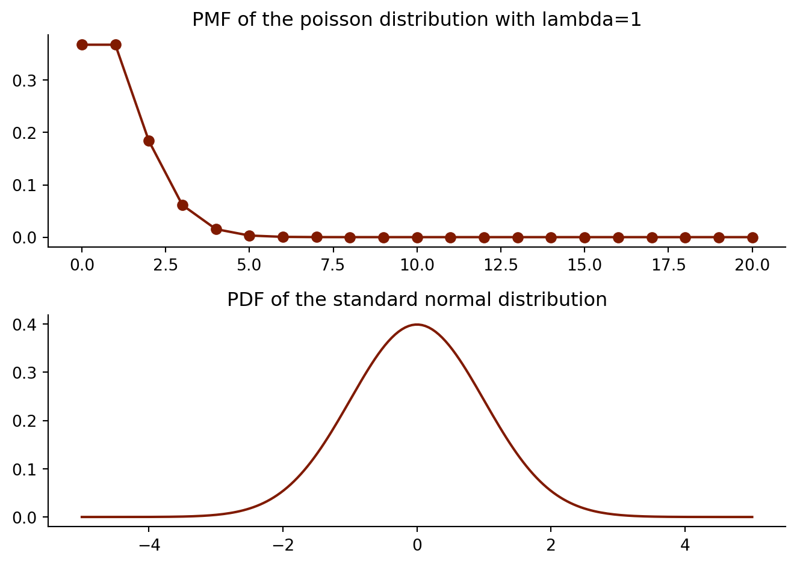
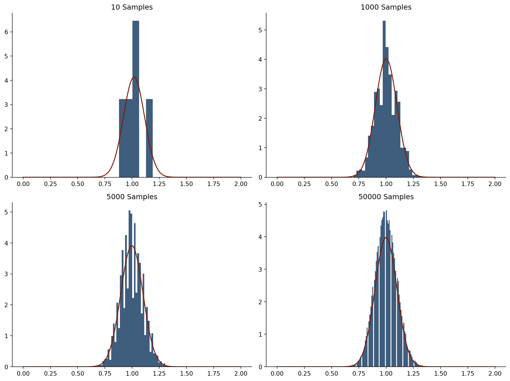
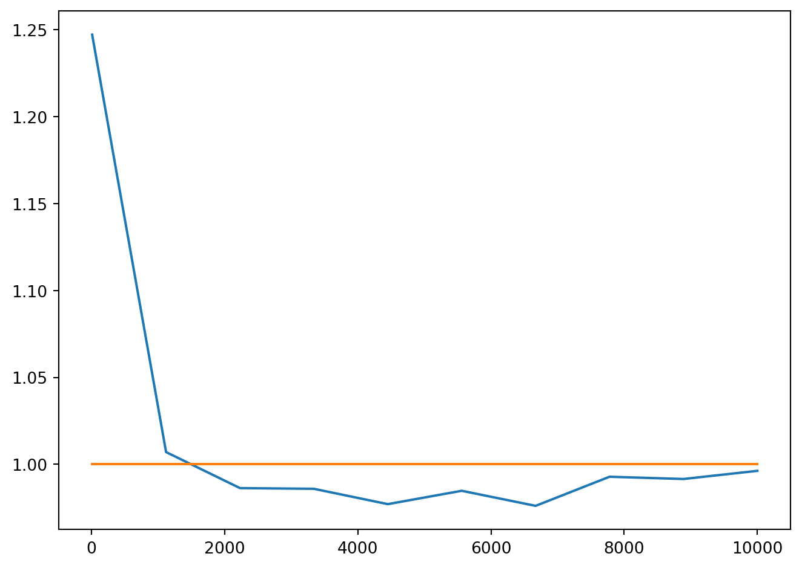
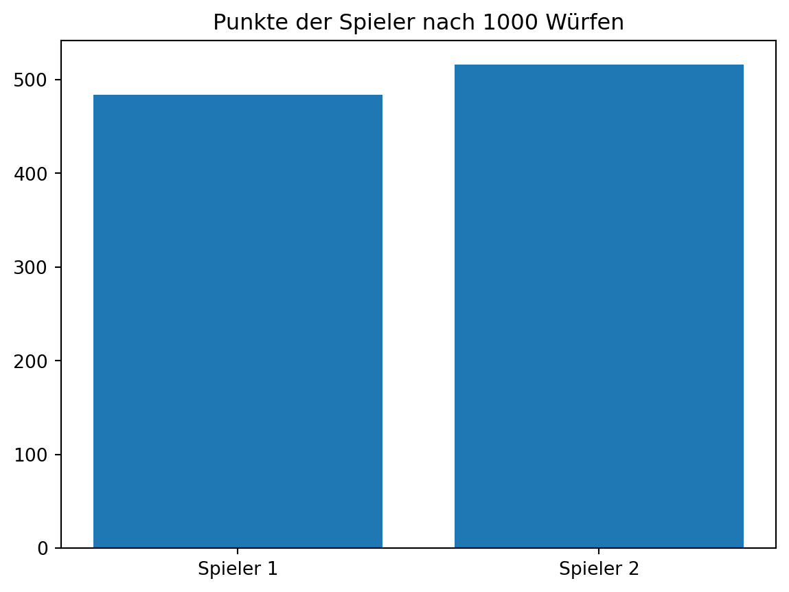

import numpy as np
import pandas as pd
import matplotlib.pyplot as plt
from scipy import stats
pmf_poisson = stats.poisson.pmf(np.linspace(0,20, 21, dtype=int), 1.0)
pdf_normal = stats.norm.pdf(np.linspace(-5,5, 200))Mögliche Lösungen zu den Aufgaben aus Block 3
Der zentrale Grenzwertsatz
Visualisiert die Funktion des zentralen Grenzwertsatzes anhand einer beliebigen Verteilung.
Hinweis: Der zentrale Grenzwertsatz besagt, dass die Mittelwerte aus vielen Stichproben, die unabhängig voneinander gezogen werden, normalverteilt sind, unabhängig von der zugrundeliegenden Verteilung. Um das zu zeigen, müsst ihr viele Stichproben einer Verteilung ziehen (nicht der Normalverteilung), jedes Mal den Mittelwert berechnen, und dann ein Histogramm dieser Mittelwerte erstellen. Je mehr Stichproben ihr berücksichtigt, desto ähnlicher sollte die Verteilung einer Normalverteilung werden.
Solution: For the solution I use the Poisson distribution with \(\lambda=1\). As you can verify from the following plot it does not look like a normal distribution at all:
\[x^2+y3+\frac{2}{3}\]
fig, ax = plt.subplots(2,1)
ax[0].spines["top"].set_visible(False) # Remove plot frame line on the top
ax[0].spines["right"].set_visible(False) # Remove plot frame line on the right
ax[0].get_xaxis().tick_bottom() # Remove ticks on the bottom
ax[0].get_yaxis().tick_left() # Remove the ticks on the left
ax[0].plot(np.linspace(0,20, 21), pmf_poisson, color="#801a00", marker="o")
ax[0].set_title("PMF of the poisson distribution with lambda=1")
ax[1].spines["top"].set_visible(False) # Remove plot frame line on the top
ax[1].spines["right"].set_visible(False) # Remove plot frame line on the right
ax[1].get_xaxis().tick_bottom() # Remove ticks on the bottom
ax[1].get_yaxis().tick_left() # Remove the ticks on the left
ax[1].plot(np.linspace(-5, 5, 200), pdf_normal, color="#801a00")
ax[1].set_title("PDF of the standard normal distribution")
fig.tight_layout()
- Create many samples from the Poisson distribution and calculate the mean
sample_size = 100
n = 10
poisson_mean_n10 = [np.mean(np.random.poisson(lam=1.0, size=sample_size)) for i in range(n)]
n = 1000
poisson_mean_n1000 = [np.mean(np.random.poisson(lam=1.0, size=sample_size)) for i in range(n)]
n = 5000
poisson_mean_n5000 = [np.mean(np.random.poisson(lam=1.0, size=sample_size)) for i in range(n)]
n = 50000
poisson_mean_n50000 = [np.mean(np.random.poisson(lam=1.0, size=sample_size)) for i in range(n)]- Fit normals to the samples
n10_parameters = stats.norm.fit(poisson_mean_n10)
n10_pdf = stats.norm.pdf(np.linspace(0,2, 200), loc=n10_parameters[0], scale=n10_parameters[1])
n1000_parameters = stats.norm.fit(poisson_mean_n1000)
n1000_pdf = stats.norm.pdf(np.linspace(0,2, 200), loc=n1000_parameters[0], scale=n1000_parameters[1])
n5000_parameters = stats.norm.fit(poisson_mean_n5000)
n5000_pdf = stats.norm.pdf(np.linspace(0,2, 200), loc=n5000_parameters[0], scale=n5000_parameters[1])
n50000_parameters = stats.norm.fit(poisson_mean_n50000)
n50000_pdf = stats.norm.pdf(np.linspace(0,2, 200), loc=n50000_parameters[0], scale=n50000_parameters[1])- Visualize the results
fig, axes = plt.subplots(2,2, figsize=(12, 9))
axes[0,0].spines["top"].set_visible(False) # Remove plot frame line on the top
axes[0,0].spines["right"].set_visible(False) # Remove plot frame line on the right
axes[0,0].get_xaxis().tick_bottom() # Remove ticks on the bottom
axes[0,0].get_yaxis().tick_left() # Remove the ticks on the left
axes[0,0].hist(poisson_mean_n10, color="#3F5D7D", bins="auto", density=True)
axes[0,0].set_title("10 Samples")
axes[0,0].plot(np.linspace(0, 2, 200), n10_pdf, color="#801a00")
axes[0,1].spines["top"].set_visible(False) # Remove plot frame line on the top
axes[0,1].spines["right"].set_visible(False) # Remove plot frame line on the right
axes[0,1].get_xaxis().tick_bottom() # Remove ticks on the bottom
axes[0,1].get_yaxis().tick_left() # Remove the ticks on the left
axes[0,1].hist(poisson_mean_n1000, color="#3F5D7D", bins="auto", density=True)
axes[0,1].set_title("1000 Samples")
axes[0,1].plot(np.linspace(0, 2, 200), n1000_pdf, color="#801a00")
axes[1,0].spines["top"].set_visible(False) # Remove plot frame line on the top
axes[1,0].spines["right"].set_visible(False) # Remove plot frame line on the right
axes[1,0].get_xaxis().tick_bottom() # Remove ticks on the bottom
axes[1,0].get_yaxis().tick_left() # Remove the ticks on the left
axes[1,0].hist(poisson_mean_n5000, color="#3F5D7D", bins="auto", density=True)
axes[1,0].set_title("5000 Samples")
axes[1,0].plot(np.linspace(0, 2, 200), n5000_pdf, color="#801a00")
axes[1,1].spines["top"].set_visible(False) # Remove plot frame line on the top
axes[1,1].spines["right"].set_visible(False) # Remove plot frame line on the right
axes[1,1].get_xaxis().tick_bottom() # Remove ticks on the bottom
axes[1,1].get_yaxis().tick_left() # Remove the ticks on the left
axes[1,1].hist(poisson_mean_n50000, color="#3F5D7D", bins=95, density=True)
axes[1,1].set_title("50000 Samples")
axes[1,1].plot(np.linspace(0, 2, 200), n50000_pdf, color="#801a00")
fig.tight_layout()
Das Gesetz der großen Zahl
Visualisiert die Implikationen vom Gesetz der großen Zahl.
Hinweis: Das Gesetz der großen Zahl besagt, dass bei wachsender Stichprobengröße der Mittelwert (und oft weitere Momente) der Stichprobe zum wahren Mittelwert (bzw. den wahren Momenten) der zugrundeliegenden Verteilung konvergiert. Um das zu zeigen könnt ihr vier verschiedene Histogramme darstellen, die alle auf Basis unterschiedlich großer Stichproben erstellt wurden. Im Skript findet sich eine ähnliche Anwendung.
Lösung: Hier wird das Gesetz anhand der Normalverteilung illustriert. Wir setzen einen Mittelwert von 1.0 selbst fest.
sample_sizes = np.linspace(10, 10000, 10, dtype=int)
sample_means = [np.mean(np.random.normal(loc=1.0, size=x)) for x in sample_sizes]fig, ax = plt.subplots()
ax.plot(sample_sizes, sample_means)
ax.plot(sample_sizes, [1.0]*len(sample_sizes))
fig.tight_layout()
Man beachte jedoch, dass dieses Gesetz nicht für alle Verteilungen gilt!
Zusatzaufgabe: Anwendung & Verbindung mit OOP
Programmiert ein ABM, in dem zwei Spieler miteinander folgendes Spiel spielen: sie werfen eine Münze und bei Kopf gewinnt der erste Spieler (i.e. er oder sie bekommt einen Punkt), bei Zahl gewinnt der zweite Spieler (i.e. er oder sie bekommt einen Punkt).
Hierzu benötigt ihr zwei Klassen:
Eine Klasse
Spieler. Diese Klasse sollte als Instanzeneigenschaft die Menge an bisher gesammelten Punkten haben (sollte mit 0 anfangen), sowie Information darüber ob der Spieler bei Kopf oder Zahl gewinnt (sollte über__init__festgelegt werden). Außerdem sollte sie eine Instanzenfunktion haben, die als Argument den Ausgang eines Münzwurfs nimmt und die gesammelten Punkte entsprechend anpasst.Eine Klasse
Spiel, die als Instanzeneigenschaft die Liste der beiden Spieler hat und eine Instanzenfunktion besitzt, die einen Münzwurf simuliert.
Lasst die Spieler das Spiel 100 Mal spielen.
class Spieler:
def __init__(self, gewinnerseite):
self.points = 0
self.win_side = gewinnerseite
def get_points(self, side):
if side == self.win_side:
self.points += 1
class Spiel:
def __init__(self):
self.players = [Spieler("Kopf"), Spieler("Zahl")]
def throw_coin(self):
if np.random.randint(0, 2) == 0:
result = "Kopf"
else:
result = "Zahl"
for a in self.players:
a.get_points(result)
spiel = Spiel()
for i in range(1000):
spiel.throw_coin()
fig, ax = plt.subplots()
ax.bar(x = ["Spieler 1","Spieler 2"], height=[spiel.players[0].points, spiel.players[1].points])
ax.set_title("Punkte der Spieler nach 1000 Würfen")Text(0.5, 1.0, 'Punkte der Spieler nach 1000 Würfen')